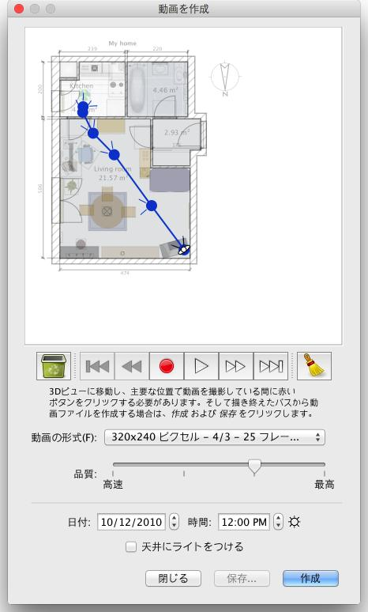

| ビデオを作成 | |||
間取りの3Dビデオを作成する場合は、3Dビュー > ビデオを作成... をメニューから選択するか、以下のビデオ作成 ツールのアイコンをクリックして下さい。
選択後、以下のダイアログボックスが表示されます。これは写真作成のダイアログと同じようなダイアログです。  画面上部は間取りが表示され、ここにビデオカメラの進行路(パス)が表示されます。間取り図の下の録画、再生、削除ボタンを選択する事で、ビデオカメラ進行路に沿った画像の収録、その再生、進行路上の各主要な位置の削除が可能です。 ビデオを作成する場合は、Sweet Home 3Dのメイン画面、3Dビューにおいて、ビデオカメラをマウスで始点に動かし、ビデオ作成画面で赤いボタンをクリックします。3Dビューに戻り、次の主要な位置にビデオカメラを動かした後、ビデオ作成画面の赤いボタンをまたクリックします。この操作を繰り返しながら、ビデオカメラの進行路を設定します。赤いボタンをクリックするたびに、主要な位置がビデオ作成画面に追加され、ビデオカメラの進行路が一見できます。 |
|